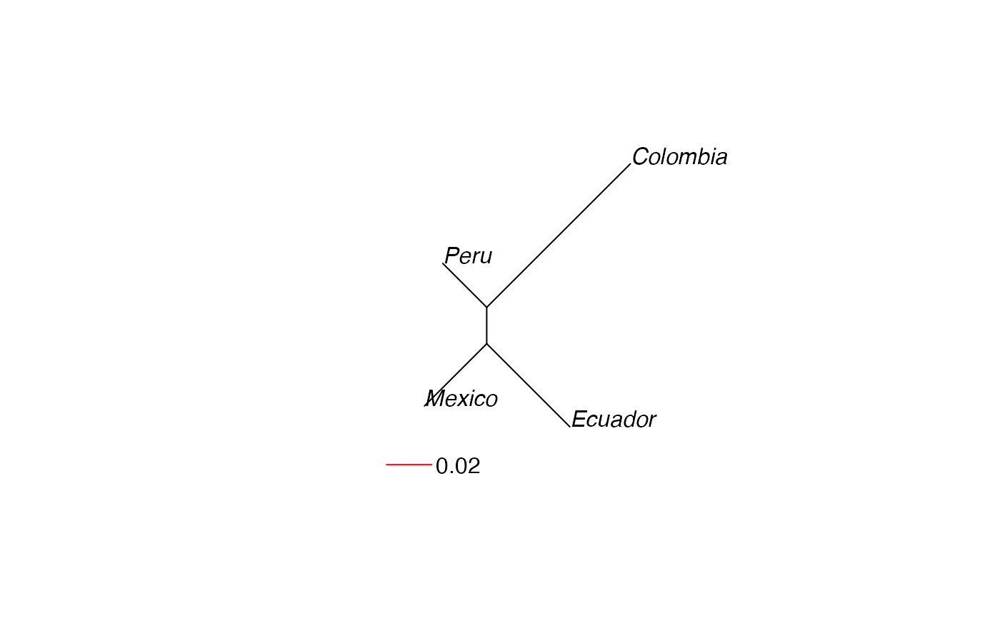

R/data_subset.r
recode_polyploids.RdAs the genind object requires ploidy to be consistent across loci, a
workaround to importing polyploid data was to code missing alleles as "0"
(for microsatellite data sets). The advantage of this is that users would be
able to calculate Bruvo's distance, the index of association, and genotypic
diversity statistics. The tradeoff was the fact that this broke all other
analyses as they relied on allele frequencies and the missing alleles are
treated as extra alleles. This function removes those alleles and returns a
genclone or genind object where
allele frequencies are coded based on the number of alleles observed at a
single locus per individual. See the examples for more details.
recode_polyploids(poly, newploidy = FALSE, addzero = FALSE)a genclone, genind, or
genpop object that has a ploidy of > 2
for genind or genclone objects: if FALSE (default),
the user-defined ploidy will stay constant. if TRUE, the ploidy for
each sample will be determined by the maximum ploidy observed for each
genotype.
add zeroes onto genind or genclone objects with uneven ploidy?
if TRUE, objects with uneven ploidies will have zeroes appended to all
loci to allow conversion to genpop objects. Defaults to FALSE.
The genind object has two caveats that make it difficult to work with polyploid data sets:
ploidy must be constant throughout the data set
missing data is treated as "all-or-none"
In an ideal world, polyploid genotypes would be just as unambiguous as diploid or haploid genotypes. Unfortunately, the world we live in is far from ideal and a genotype of AB in a tetraploid organism could be AAAB, AABB, or ABBB. In order to get polyploid data in to adegenet or poppr, we must code all loci to have the same number of allelic states as the ploidy or largest observed heterozygote (if ploidy is unknown). The way to do this is to insert zeroes to pad the alleles. So, to import two genotypes of:
| NA | 20 | 23 | 24 |
| 20 | 24 | 26 | 43 |
they should be coded as:
| 0 | 20 | 23 | 24 |
| 20 | 24 | 26 | 43 |
This zero is treated as an extra allele and is represented in the genind object as so:
| 0 | 20 | 23 | 24 | 26 | 43 |
| 1 | 1 | 1 | 1 | 0 | 0 |
| 0 | 1 | 0 | 1 | 1 | 1 |
This function remedies this problem by removing the zero column. The above table would become:
| 20 | 23 | 24 | 26 | 43 |
| 1 | 1 | 1 | 0 | 0 |
| 1 | 0 | 1 | 1 | 1 |
With this, the user is able to calculate frequency based statistics on the data set.
This is an approximation, and a bad one at that. Poppr was not originally intended for polyploids, but with the inclusion of Bruvo's distance, it only made sense to attempt something beyond single use.
data(Pinf)
iPinf <- recode_polyploids(Pinf)
# Note that the difference between the number of alleles.
nAll(Pinf)
#> Pi02 D13 Pi33 Pi04 Pi4B Pi16 G11 Pi56 Pi63 Pi70 Pi89
#> 11 26 3 5 8 7 22 4 4 4 12
nAll(iPinf)
#> Pi02 D13 Pi33 Pi04 Pi4B Pi16 G11 Pi56 Pi63 Pi70 Pi89
#> 10 25 2 4 7 6 21 3 3 3 11
# \dontrun{
library("ape")
# Removing missing data.
setPop(Pinf) <- ~Country
# Calculating Rogers' distance.
rog <- rogers.dist(genind2genpop(Pinf))
#>
#> Converting data from a genind to a genpop object...
#>
#> ...done.
#>
irog <- rogers.dist(recode_polyploids(genind2genpop(Pinf)))
#>
#> Converting data from a genind to a genpop object...
#>
#> ...done.
#>
# We will now plot neighbor joining trees. Note the decreased distance in the
# original data.
plot(nj(rog), type = "unrooted")
add.scale.bar(lcol = "red", length = 0.02)

plot(nj(irog), type = "unrooted")
add.scale.bar(lcol = "red", length = 0.02)
# }